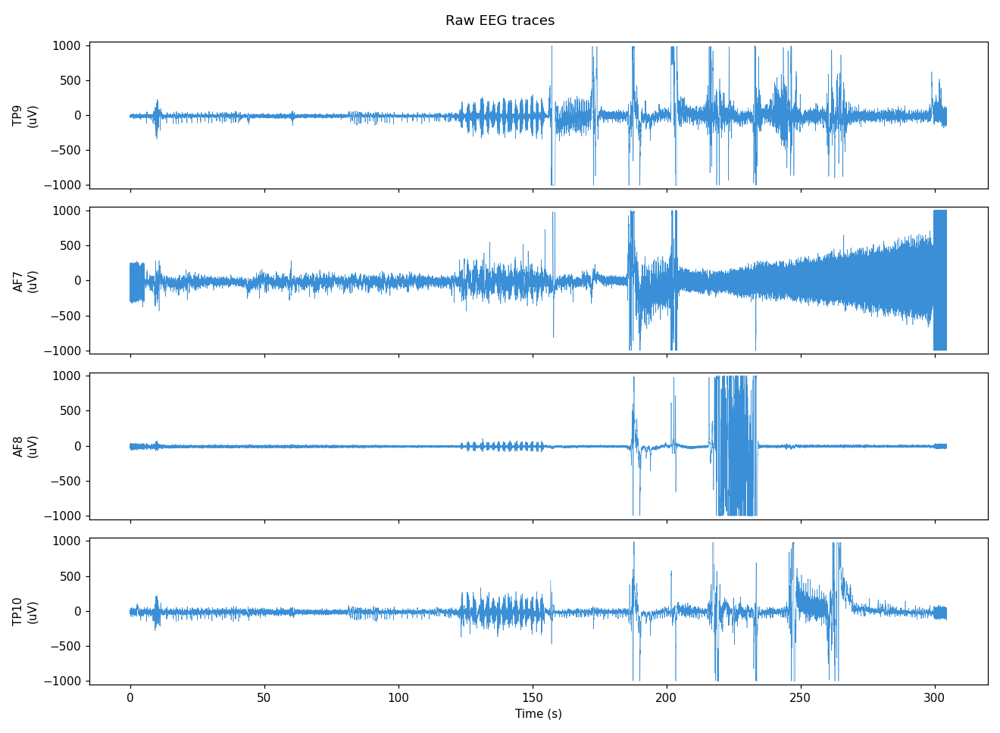
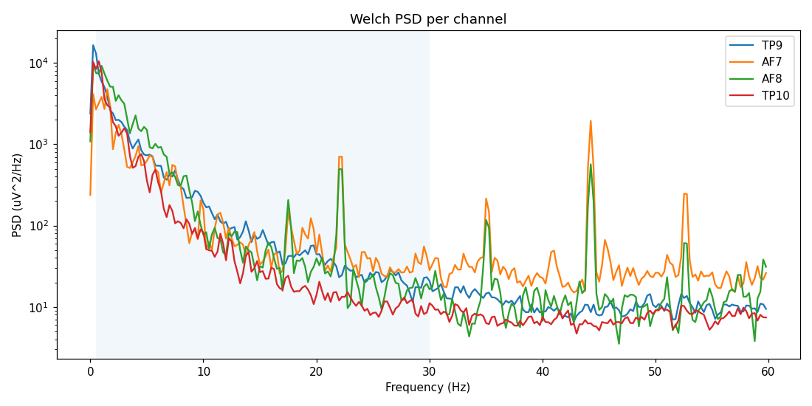
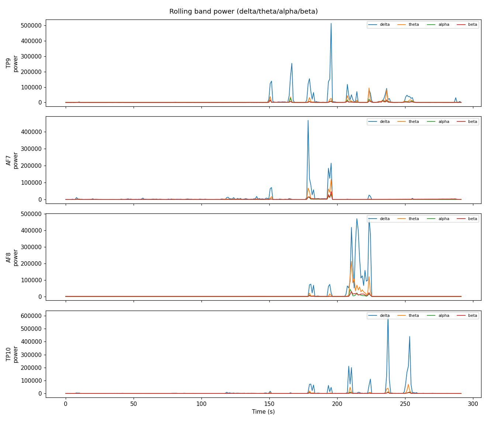
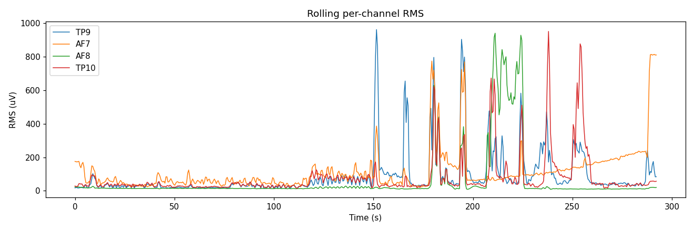
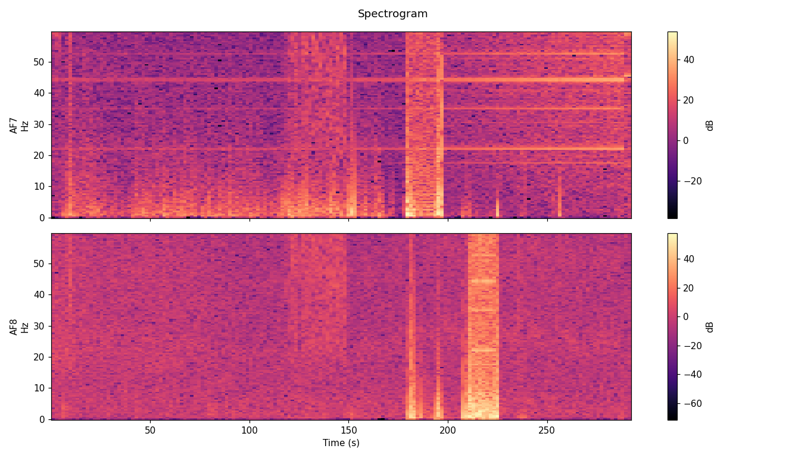

EEG session report — calibration_2026-07-10T141352_muses
HEALTHY
- 98 blink-like transient(s) detected on the frontal channel used for detection.
- 19 EMG-like burst(s) detected.
Per-channel quality
| Channel | Contact | Clipping | RMS | Overall |
|---|
| TP9 | Excellent | 0.65% | 162.5 uV | Good |
| AF7 | Excellent | 0.85% | 176.6 uV | Good |
| AF8 | Excellent | 0.94% | 175.7 uV | Good |
| TP10 | Excellent | 0.34% | 146.4 uV | Good |
Recording summary
| Duration | 304.6 s |
|---|
| Sample rate | 265.68 Hz |
|---|
| Samples | 77973 |
|---|
| Channels | TP9, AF7, AF8, TP10 |
|---|
Raw traces

Power spectral density

Overall band power by channel
| Channel | delta | theta | alpha | beta |
|---|
| TP9 | 11097.51 | 2331.33 | 836.26 | 668.41 |
| AF7 | 6602.79 | 2011.07 | 497.32 | 1118.65 |
| AF8 | 15628.56 | 3709.37 | 653.68 | 788.58 |
| TP10 | 10491.39 | 1316.36 | 338.61 | 272.42 |
Rolling band power

RMS timeline

| Channel | Mean RMS |
|---|
| TP9 | 162.46 uV |
| AF7 | 176.60 uV |
| AF8 | 175.71 uV |
| TP10 | 146.43 uV |
Spectrogram

Clipping
| Channel | % samples clipped |
|---|
| TP9 | 0.65% |
| AF7 | 0.85% |
| AF8 | 0.94% |
| TP10 | 0.34% |
Estimated blink events (frontal channel, heuristic)
| Start | End | Channel |
|---|
| 9.3s | 9.4s | AF7 |
| 9.5s | 9.6s | AF7 |
| 48.2s | 48.2s | AF7 |
| 59.4s | 59.5s | AF7 |
| 66.8s | 66.9s | AF7 |
| 120.9s | 120.9s | AF7 |
| 122.9s | 122.9s | AF7 |
| 124.3s | 124.4s | AF7 |
| 124.6s | 124.7s | AF7 |
| 125.3s | 125.4s | AF7 |
| 126.9s | 127.0s | AF7 |
| 129.2s | 129.2s | AF7 |
| 129.2s | 129.4s | AF7 |
| 129.6s | 129.7s | AF7 |
| 132.0s | 132.0s | AF7 |
| 132.1s | 132.1s | AF7 |
| 132.7s | 132.8s | AF7 |
| 132.9s | 132.9s | AF7 |
| 134.1s | 134.2s | AF7 |
| 135.1s | 135.1s | AF7 |
| 138.1s | 138.2s | AF7 |
| 146.6s | 146.6s | AF7 |
| 146.7s | 146.8s | AF7 |
| 147.0s | 147.1s | AF7 |
| 147.3s | 147.3s | AF7 |
| 149.2s | 149.2s | AF7 |
| 149.3s | 149.4s | AF7 |
| 154.7s | 154.8s | AF7 |
| 154.8s | 154.9s | AF7 |
| 157.3s | 157.5s | AF7 |
| 157.6s | 157.8s | AF7 |
| 157.9s | 158.0s | AF7 |
| 158.4s | 158.5s | AF7 |
| 158.6s | 158.7s | AF7 |
| 165.2s | 165.2s | AF7 |
| 185.4s | 185.6s | AF7 |
| 185.7s | 185.8s | AF7 |
| 185.8s | 186.1s | AF7 |
| 186.1s | 186.4s | AF7 |
| 186.4s | 186.5s | AF7 |
| 186.5s | 186.6s | AF7 |
| 186.6s | 186.7s | AF7 |
| 186.7s | 186.9s | AF7 |
| 186.9s | 187.0s | AF7 |
| 187.0s | 187.1s | AF7 |
| 187.1s | 187.3s | AF7 |
| 187.4s | 187.4s | AF7 |
| 187.6s | 187.7s | AF7 |
| 187.8s | 188.1s | AF7 |
| 188.1s | 188.2s | AF7 |
...and 48 more
Estimated EMG / jaw-clench bursts (heuristic)
| Start | End | Channel |
|---|
| 151.3s | 151.5s | TP9 |
| 166.2s | 166.4s | TP9 |
| 195.5s | 195.8s | TP9 |
| 208.4s | 208.7s | TP9 |
| 224.6s | 224.8s | TP9 |
| 237.0s | 237.5s | TP9 |
| 194.5s | 194.8s | AF7 |
| 195.8s | 196.3s | AF7 |
| 288.7s | 292.9s | AF7 |
| 211.2s | 211.4s | AF8 |
| 212.1s | 214.4s | AF8 |
| 215.1s | 215.4s | AF8 |
| 215.9s | 216.1s | AF8 |
| 216.9s | 221.8s | AF8 |
| 224.3s | 224.6s | AF8 |
| 147.6s | 147.8s | TP10 |
| 180.6s | 180.8s | TP10 |
| 209.9s | 210.2s | TP10 |
| 238.2s | 238.5s | TP10 |
Estimated low-amplitude rest periods (heuristic)
| Start | End | Channel |
|---|
| 43.2s | 57.1s | |
| 58.6s | 78.0s | |
| 94.9s | 103.8s | |